윤석열 내란 사태
12
03
03
12
05
05
12
07
07
12
04
04
12
06
06
윤석열 대통령은 이날 밤 10시 23분 긴급 담화를 통해 비상계엄을
선포하며 전국을 충격에 빠뜨렸습니다. 대통령은 "국가 안보와
공공질서 유지를 위한 불가피한 결정"이라고 설명했지만, 이를
둘러싼 정치적 논란이 즉각적으로 불거졌습니다.
계엄사령부가 설치되었으며, 박안수 육군 대장이 계엄사령관으로 임명되었습니다. 국회 주변에는 경찰 기동대가 배치되고 출입이 통제되었으며, 계엄령 시행으로 정치 활동, 집회, 시위가 전면 금지되었습니다.
야당은 이를 "헌법에 반하는 위헌적 조치"로 규정하며 국회 긴급 소집을 요청했습니다. 이재명 더불어민주당 대표는 국민들에게 국회로 모여달라는 호소를 했습니다.
시민들은 SNS를 통해 계엄에 대한 불안과 분노를 표현했으며, 일부 지역에서는 자발적으로 촛불 집회가 열리기 시작했습니다.
국제사회에서는 BBC 등 주요 언론이 긴급 보도를 통해 한국 민주주의의 퇴보 가능성을 우려했습니다. 미국과 EU는 신속히 상황을 주시하며 한국 정부의 결정을 비판했습니다.
계엄사령부가 설치되었으며, 박안수 육군 대장이 계엄사령관으로 임명되었습니다. 국회 주변에는 경찰 기동대가 배치되고 출입이 통제되었으며, 계엄령 시행으로 정치 활동, 집회, 시위가 전면 금지되었습니다.
야당은 이를 "헌법에 반하는 위헌적 조치"로 규정하며 국회 긴급 소집을 요청했습니다. 이재명 더불어민주당 대표는 국민들에게 국회로 모여달라는 호소를 했습니다.
시민들은 SNS를 통해 계엄에 대한 불안과 분노를 표현했으며, 일부 지역에서는 자발적으로 촛불 집회가 열리기 시작했습니다.
국제사회에서는 BBC 등 주요 언론이 긴급 보도를 통해 한국 민주주의의 퇴보 가능성을 우려했습니다. 미국과 EU는 신속히 상황을 주시하며 한국 정부의 결정을 비판했습니다.
12.3
비상계엄 선포
새벽 국회 본회의에서 계엄 해제 요구 결의안이 긴급히 상정되어
만장일치로 통과되었습니다. 계엄군이 국회 진입을 시도하며 긴박한
순간도 있었지만, 여야 의원들의 단결된 의지로 결의안이
처리되었습니다.
오전 4시 30분, 윤석열 대통령은 국무회의를 소집해 국회의 결정을 수용하고 계엄 해제를 발표했습니다. 그러나 이 과정에서 대통령의 권력 남용 논란이 커지며 책임론이 제기되었습니다.
시민사회는 계엄 해제 이후에도 전국적으로 대규모 집회를 조직하며 대통령의 사과와 민주주의 회복을 촉구했습니다. 민주노총, 참여연대, 대학생 단체들은 연대해 서울 도심에서 시위를 준비했고, SNS와 온라인 커뮤니티에서는 계엄 철폐를 넘어 윤 대통령의 퇴진 요구 여론이 확산되었습니다.
국제사회는 한국의 빠른 계엄 해제를 긍정적으로 평가하면서도, 민주주의가 위협받은 상황에 대한 우려를 표명했습니다. 미국과 EU는 민주주의 신뢰 회복을 위한 추가 조치를 요구했으며, 국제인권단체들은 계엄령 동안 발생한 인권 침해 사례를 조사하겠다고 발표했습니다.
오전 4시 30분, 윤석열 대통령은 국무회의를 소집해 국회의 결정을 수용하고 계엄 해제를 발표했습니다. 그러나 이 과정에서 대통령의 권력 남용 논란이 커지며 책임론이 제기되었습니다.
시민사회는 계엄 해제 이후에도 전국적으로 대규모 집회를 조직하며 대통령의 사과와 민주주의 회복을 촉구했습니다. 민주노총, 참여연대, 대학생 단체들은 연대해 서울 도심에서 시위를 준비했고, SNS와 온라인 커뮤니티에서는 계엄 철폐를 넘어 윤 대통령의 퇴진 요구 여론이 확산되었습니다.
국제사회는 한국의 빠른 계엄 해제를 긍정적으로 평가하면서도, 민주주의가 위협받은 상황에 대한 우려를 표명했습니다. 미국과 EU는 민주주의 신뢰 회복을 위한 추가 조치를 요구했으며, 국제인권단체들은 계엄령 동안 발생한 인권 침해 사례를 조사하겠다고 발표했습니다.
계엄의 후폭풍으로 여야 간 갈등이 극에 달했습니다. 국민의힘
내부에서도 대통령의 계엄 선포를 비판하는 목소리가 커졌으며, 책임론이
대두되었습니다. 일부 국민의힘 의원들은 대통령의 사퇴와 조기 대선을
주장하며 내부적으로 격렬한 논의가 이루어졌습니다.
반면, 더불어민주당과 정의당 등 야당은 대통령에 대한 탄핵 절차를 강력히 요구하며 정치적 압박을 이어갔습니다.
이와 동시에 민주노총과 대학생 단체를 포함한 시민사회는 전국적으로 시위를 확대하며 정치권에 개혁을 요구했습니다.
이러한 상황 속에서 발표된 여론조사 결과, 윤석열 대통령의 지지율은 급락하여 13%를 기록했습니다. 국민의 80%는 계엄 선포를 부정적으로 평가하며 대통령의 결정을 비판하는 여론이 압도적으로 형성되었습니다.
반면, 더불어민주당과 정의당 등 야당은 대통령에 대한 탄핵 절차를 강력히 요구하며 정치적 압박을 이어갔습니다.
이와 동시에 민주노총과 대학생 단체를 포함한 시민사회는 전국적으로 시위를 확대하며 정치권에 개혁을 요구했습니다.
이러한 상황 속에서 발표된 여론조사 결과, 윤석열 대통령의 지지율은 급락하여 13%를 기록했습니다. 국민의 80%는 계엄 선포를 부정적으로 평가하며 대통령의 결정을 비판하는 여론이 압도적으로 형성되었습니다.
2024년 12월 7일, 윤석열 대통령의 비상계엄 선포에 분노한 국민들이
서울 광화문을 비롯한 전국 주요 도시에서 대규모 시위를 벌였습니다.
이번 시위는 특정 정당이나 단체의 주도가 아닌, 민주주의와 헌법적
가치가 훼손되었다고 느낀 시민들이 자발적으로 참여해 이루어진 것으로,
시위대는 대통령의 사퇴와 제도적 개혁을 강력히 요구했습니다.
같은 날, 국회에서는 대통령 탄핵소추안이 상정되었으나 국민의힘 의원들의 불참으로 의결 정족수를 충족하지 못하고 부결되었습니다. 이러한 결과는 국민의힘에 대한 국민적 불신을 더욱 심화시켰으며, 계엄령의 책임자에 대한 명확한 처벌과 개혁을 기대했던 국민들에게 실망과 분노를 안겨주었습니다.
같은 날, 국회에서는 대통령 탄핵소추안이 상정되었으나 국민의힘 의원들의 불참으로 의결 정족수를 충족하지 못하고 부결되었습니다. 이러한 결과는 국민의힘에 대한 국민적 불신을 더욱 심화시켰으며, 계엄령의 책임자에 대한 명확한 처벌과 개혁을 기대했던 국민들에게 실망과 분노를 안겨주었습니다.
비상계엄 해제 및 정치적 반응
정치적 논란과 시민사회의 반발이 고조되는 가운데, 서울, 부산, 광주 등
주요 도시에서 수십만 명이 참여하는 대규모 시위가 열렸습니다.
시민들은 대통령의 사퇴와 재발 방지를 위한 제도적 개혁을 강력히
요구했으며, 반정부 정서가 급격히 확산되면서 시위의 규모와 강도는
더욱 커졌습니다.
국제사회는 한국의 정치적 불안정을 우려하며 민주주의 회복 가능성에 지속적인 관심을 보였습니다. UN, EU, 그리고 미국은 한국 정부에 경고하며 추가적인 민주적 조치를 촉구했습니다.
또한, 국제인권단체들은 계엄 기간 중 발생한 인권 침해 사례를 수집하며 윤석열 정부에 대한 국제적 압박을 강화했습니다. 이러한 상황 속에서 국내외적으로 대통령의 책임에 대한 논의가 계속 확대되었습니다.
국제사회는 한국의 정치적 불안정을 우려하며 민주주의 회복 가능성에 지속적인 관심을 보였습니다. UN, EU, 그리고 미국은 한국 정부에 경고하며 추가적인 민주적 조치를 촉구했습니다.
또한, 국제인권단체들은 계엄 기간 중 발생한 인권 침해 사례를 수집하며 윤석열 정부에 대한 국제적 압박을 강화했습니다. 이러한 상황 속에서 국내외적으로 대통령의 책임에 대한 논의가 계속 확대되었습니다.
정치적 책임론과
시민사회의 움직임
시민사회의 움직임
국회 앞 대규모
윤석열 탄핵 집회
윤석열 탄핵 집회
여론 악화와 국제적 우려
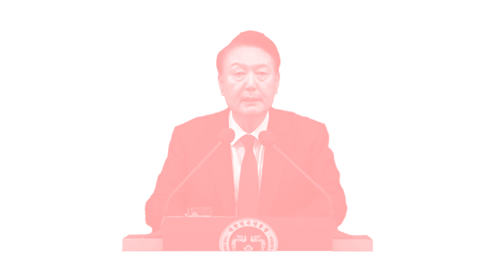
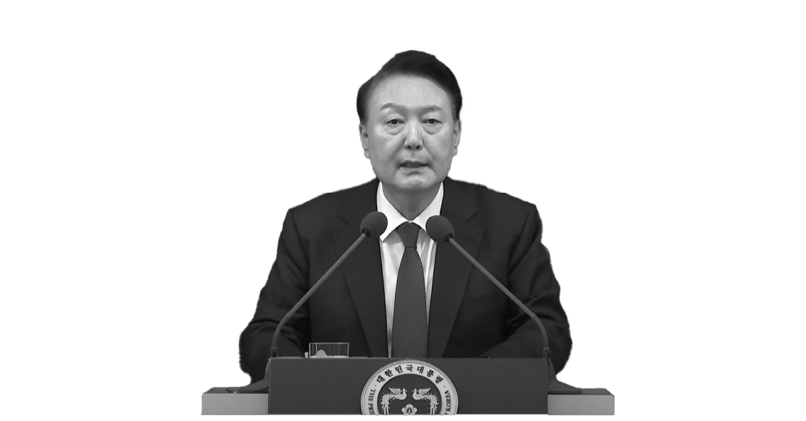
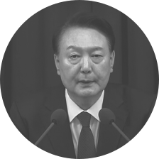
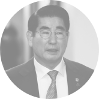
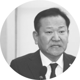
“105”
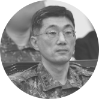
윤석열
내란범
계엄 지시
체포 계획
규탄
야당 및 시민사회
체포 명단
국제사회
김용현 국방부장관
권순일
김명수
미국
국제노동기구
BBC
유럽연합
유엔
김민석
이재명
우원식
심상정
국내외 교수
전국 대학생
범국민
민주노총
박찬대
참여연대
조국
더불어민주당
김민웅
박찬대
이재명
조국
우원식
정청래
중앙선관위
일부 직원들
일부 직원들
한동훈
충암고 동문
경찰청
공수부대
지상작전사령부
수도방위사령부
이상민 행정안전부 장관
여인형 국군방첩사령관
박종선 777사령관
박안수 계엄사령관
계엄령 행정적 지원
군부 협력 계엄령 집행
배신당했던 당에 헌신
계엄령 선포 직접 건의
체포 대상자 명단 작성 및
홍장원 1차장에게 전달
홍장원 1차장에게 전달
국회 진입 시도
계엄 중 대북 정보 수집 및 보고
계엄 포고령 발표 , 국회 봉쇄
및 정당 활동 금지
및 정당 활동 금지
시국선언
시국선언
촛불 집회, 탄핵 시위
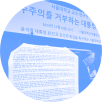
사건의 흐름
사건의 관계
국민을 배반하고 내란수괴를 지킨
부역자들의 수입니다.
대한민국 내란의 공범들을 공개합니다.
부역자들의 수입니다.
대한민국 내란의 공범들을 공개합니다.
여러분도 이들의 이름과 선택을
기억해 주시기 바랍니다.
국민들은 이들을 잊지 않고
반드시 심판할 것입니다.
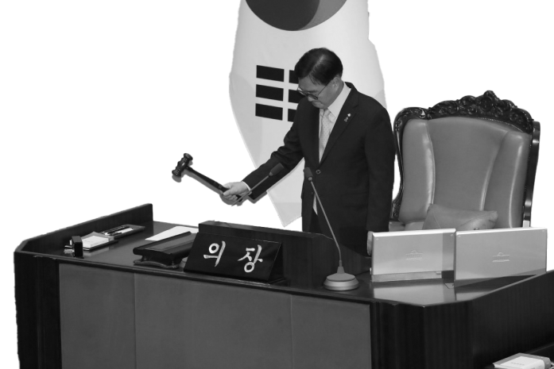
기억해 주시기 바랍니다.
국민들은 이들을 잊지 않고
반드시 심판할 것입니다.
서울특별시
고동진
권영세
김재섭
나경원
박수민
박정훈
배현진
서명옥
신동욱
조은희
조정훈
권영세
김재섭
나경원
박수민
박정훈
배현진
서명옥
신동욱
조은희
조정훈
강남구병
용산구
도봉구갑
동작구을
강남구을
송파구갑
송파구을
강남구갑
서초구을
서초구갑
마포구갑
용산구
도봉구갑
동작구을
강남구을
송파구갑
송파구을
강남구갑
서초구을
서초구갑
마포구갑
경기도
김성원
김용태
김은혜
송석준
김선교
박정하
김용태
김은혜
송석준
김선교
박정하
동두천시양주시연천구을
포천시가평군
성남시분당구을
이천시
여주시양평군
원주시갑
포천시가평군
성남시분당구을
이천시
여주시양평군
원주시갑
인천광역시
윤상현
동구미추홀구을
충청북도
박덕흠
엄태영
이종배
엄태영
이종배
보은군옥천군영동군괴산군
제천시단양군
충주시
제천시단양군
충주시
경상북도
강명구
구자근
김석기
김정재
김형동
박형수
송언석
이만희
이상휘
임이자
임종득
정희용
조지연
구자근
김석기
김정재
김형동
박형수
송언석
이만희
이상휘
임이자
임종득
정희용
조지연
포항시 남구
군위군, 의성군, 청송군
경주시
포항시 북구
안동시
울진군
김천시
영천시
김천시
예천군
구미시 갑
구미시 을
경산시
군위군, 의성군, 청송군
경주시
포항시 북구
안동시
울진군
김천시
영천시
김천시
예천군
구미시 갑
구미시 을
경산시
경상남도
강민국
김종양
김태호
박대출
박상웅
서일준
서천호
신성범
윤영석
윤한홍
이종욱
정점식
최형두
김종양
김태호
박대출
박상웅
서일준
서천호
신성범
윤영석
윤한홍
이종욱
정점식
최형두
진주시을
창원시 의창구
경남 양산시을
경남 진주시갑
사천시 남해군 하동군
거제시
사천시 남해군 하동군
산청군 함양군 거창군 합천군
양산시갑
창원시 마산회원구
창원시 의창구
통영시 고성군
창원시 마산합포구
창원시 의창구
경남 양산시을
경남 진주시갑
사천시 남해군 하동군
거제시
사천시 남해군 하동군
산청군 함양군 거창군 합천군
양산시갑
창원시 마산회원구
창원시 의창구
통영시 고성군
창원시 마산합포구
부산광역시
곽규택
김대식
김도읍
김미애
김희정
박성훈
박수영
백종헌
서지영
이성권
이헌승
정동만
정성국
정연욱
조경태
조승환
주진우
김대식
김도읍
김미애
김희정
박성훈
박수영
백종헌
서지영
이성권
이헌승
정동만
정성국
정연욱
조경태
조승환
주진우
서구동구
사상구
강서구
해운대구을
연제구
북구을
남구
금정구
동래구
사하구갑
부산진구을
기장군
부산진구갑
수영구
사하구을
중구영도구
해운대구갑
사상구
강서구
해운대구을
연제구
북구을
남구
금정구
동래구
사하구갑
부산진구을
기장군
부산진구갑
수영구
사하구을
중구영도구
해운대구갑
울산광역시
강길부
이상헌
정수영
이상헌
정수영
울주군
동구
북구
동구
북구
대구광역시
강대식
권영진
김기웅
김상훈
김승수
우재준
유영하
윤재옥
이인선
주호영
최은석
추경호
권영진
김기웅
김상훈
김승수
우재준
유영하
윤재옥
이인선
주호영
최은석
추경호
동구갑
수성구갑
달서구을
서구
북구을
중구
달서구갑
달서구을
수성구을
수성구갑
북구갑
달서구을
수성구갑
달서구을
서구
북구을
중구
달서구갑
달서구을
수성구을
수성구갑
북구갑
달서구을
충청남도
강승규
성일종
장동혁
성일종
장동혁
홍성군예산군
서산시태안군
보령시서천군
서산시태안군
보령시서천군
윤석열의 계엄 선포로 인한 내란 사태는 국가의 큰 혼란을 초래하였습니다.
이와 관련된 정보들은 아래에서
확인하실 수 있습니다.
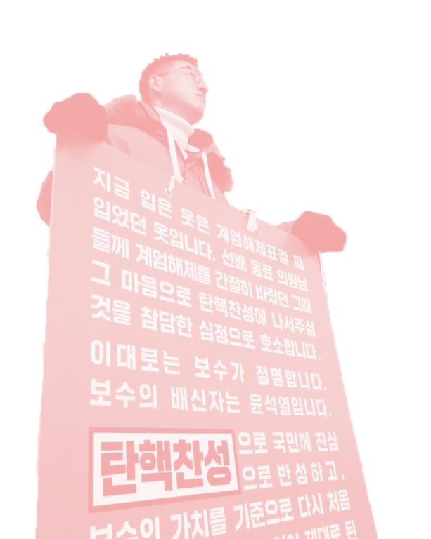
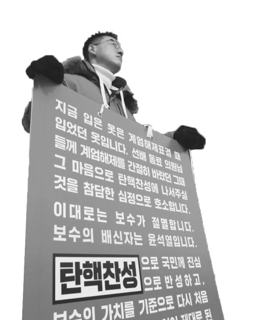
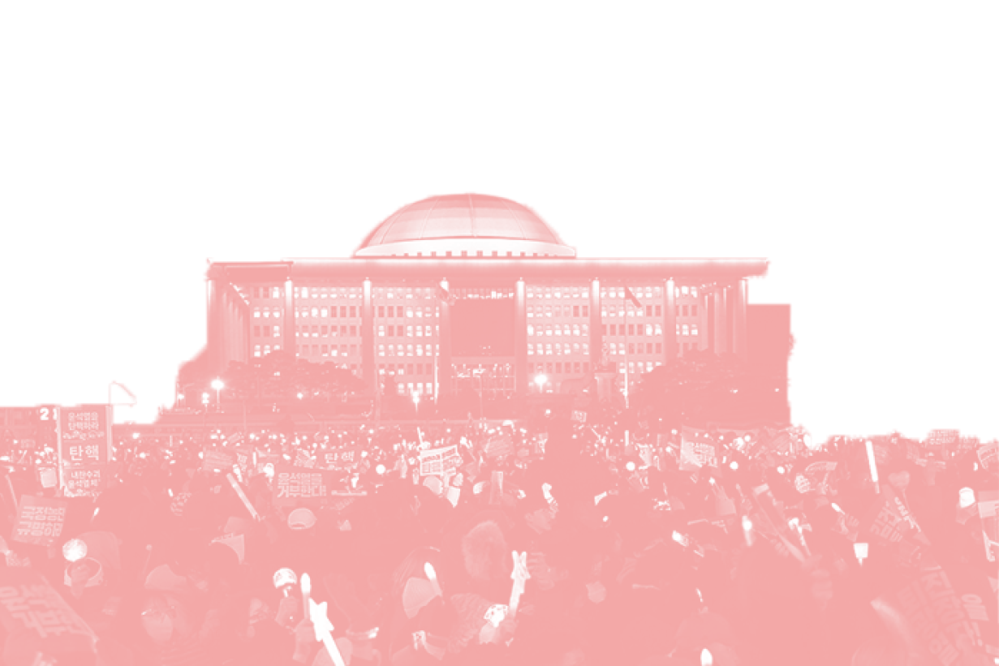
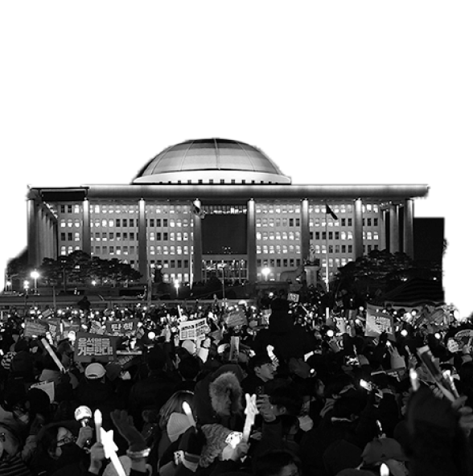
이와 관련된 정보들은 아래에서
확인하실 수 있습니다.
 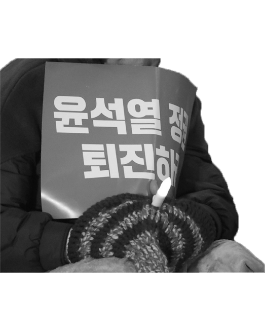
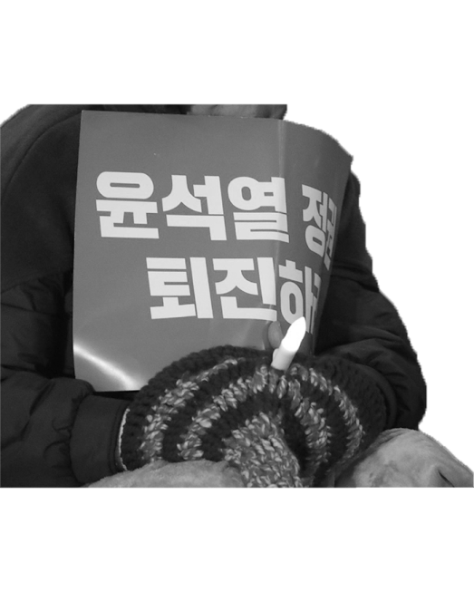